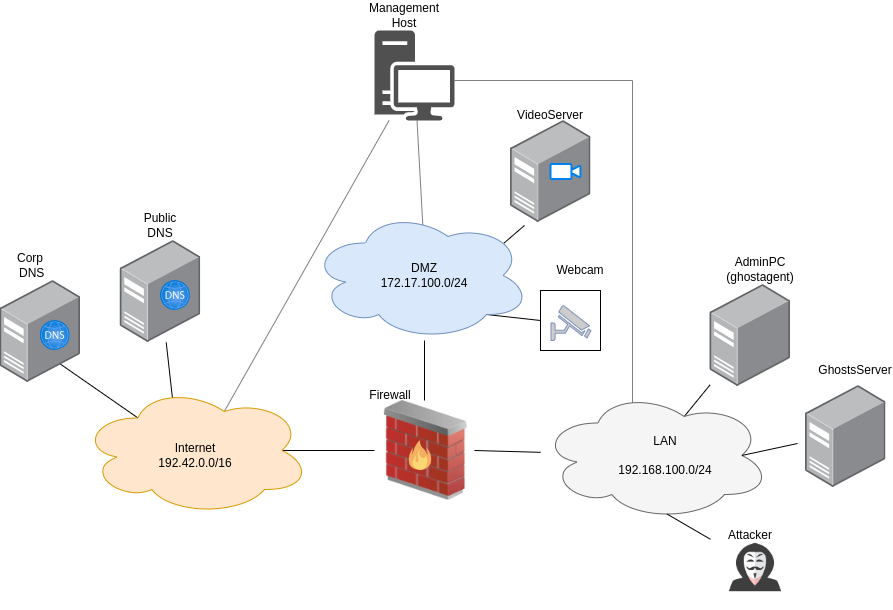

LAN Turtle (Scenario 5)

Attacker Steps:
- Attacker joins the network with a new machine (Lanturtle) (T1200)
- Attacker executes arp-spoofing against client + firewall (T1557.002)
- Client (AdminPC) connects via http to server in dmz
- Attacker performs sslstrip-attack and gains auth hash (T1040, T1528)
- Attacker uses auth hash to make API request (T1550.001)
Manual Walkthrough
All steps of the scenario can be executed automatically as an ansible playbook. However for a manual inspection, the detailed steps are described below.
1. Attacker joins the network with a new machine (Lanturtle) (T1200)
This step is part of the initial setup, an attacker machine is already placed inside the LAN network with terragrunt.
2. Attacker executes arp-spoofing against client + firewall (T1557.002)
For this step, bettercap is used. There is a ansible/run/scenario5/files/bettercap.cap file defined with the target IP of the AdminPC:
net.probe on
set arp.spoof.targets 192.168.100.222
arp.spoof on
set http.proxy.sslstrip true
http.proxy on
To manually start the APR spoofing, run sudo bettercap -caplet bettercap.cap.
3. Clients connects via http to server in dmz
This step is automated with the browser executor of AttackMate. The steps are defined in the playbook.yml file. Ee can just connect to the AdminPC via a terminal and run:
attackm8 playbook.yml
To connect to the machine via the browser, first we have to have a terminal open for tunneling:
ssh -D 9999 aecid@<MGMT_IP>
And in the settings of the local browser, set a manual proxy on port 9999 (found in the network settings.)
We can observe it on the videoserver machine, that requests are really arriving, by inspecting
the following file: /var/www/default/log/access.log.
4. Attacker performs sslstrip-attack and gains auth hash from the html response of the videoserver (T1040, T1528)
The process for this is defined in the ansible/run/scenario5/files/get_auth.py file.
5. Attacker uses auth hash to send a request to the zoneminder API (T1550.001)
(see ansible/run/scenario5/files/login.yml).
Verification of Attack Success
To verify if the attack was successful, the fastest way is to check the output of Attackmate, which can be found in
the output.log file. This file should contain the API response.
Note
The attacker needds to intercept a packet that contains the videoserver response with the section of the html containing the auth_hash. If the attack was not successfull try to adjust the timing or manually start the attacker, wait until it reaches the get_auth step and then start the client playbook.